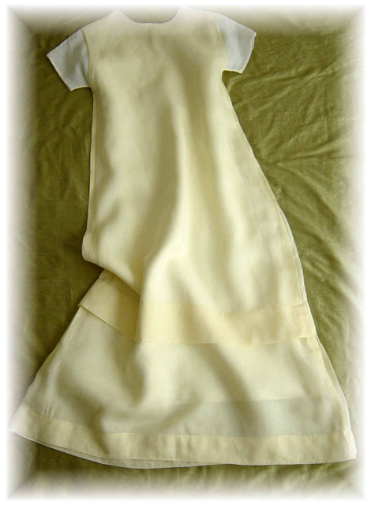

Cotton Organdy Dress
- Description: Two dresses: white cotton organdy dress underneath yellow cotton organdy dress. High round neckline. Yellow organdy dress: sleeveless, white organdy dress: cap sleeves. Tuck detail near hem. Calf-length. A-line. Two layer fabric construction for both dresses. Generous hem.
- Fabric: 100% Cototn Organdy
- Care: Machine wash cold, hang to dry, iron if needed.
- Price (USD): $484
previous dress
next dress